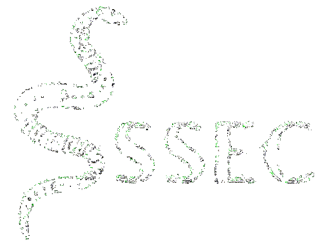

Sssec is a Cybersecurity training, testing and recruitment platform based in Ethiopia, focused in
gathering the most talented individuals from around the country and teaching through practice, testing
and recruiting them to work as Redteamers, Penetration testers and Ethical hackers as freelancers or fulltime employees in various organizations in the country.
made by c1nn3r.
contact me on twitter @c1nn3r_
or email c1nn3r@proton.me